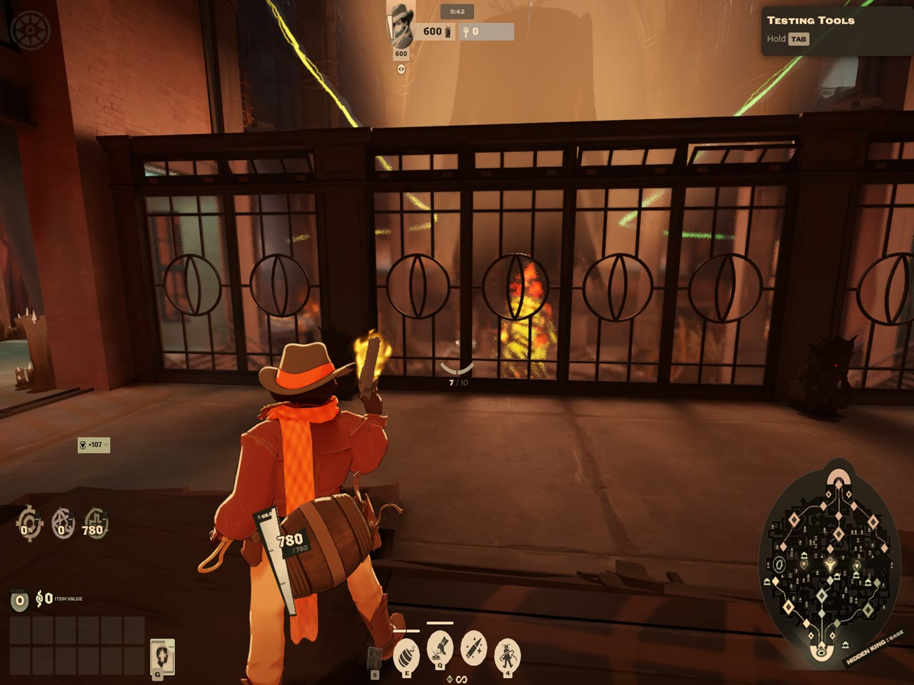

HUD Fit
- De-stretch the HUD for 4:3 stretched (or 5:4, 16:10)
- Scale the whole UI, or each element on its own, including the shop
- Drag any of 23 elements on the real HUD, with snapping and centering
- Hide, lock and reset elements; save and share layouts
- Fixes the health bar disappearing at 4:3
Before and after
The same spot at 4:3 stretched: the stock HUD, then de-stretched and resized with HUD Fit. Drag to compare.

BeforeWith HUD Fit
4:3 Video
- 4x3 next to 16:9, 16:10 and 21:9 in Settings → Video
- Lists the 4:3 resolutions your driver offers (1600x1200, 1440x1080...)
- Never replaces the settings screen, so new game settings keep showing
- Made to be used with HUD Fit

Hero Select Plus
- Names and colour-coded classes on every hero card
- Search by name, class, tag, weapon type or difficulty
- Class filters and a Beginner button
- Hover details: role, difficulty and playstyle
Install
Download a mod's .zip above, then add it in your mod manager or by hand.
Deadlock Mod Manager easiest
- Open Deadlock Mod Manager and choose Add Local Mod.
- Drop the zip in (don't unzip it), name it, add it, and turn it on.
Grimoire
- In Grimoire, open Installed and choose Import Local Mods.
- Pick the zip and turn the mod on.
By hand
- Unzip it. It contains
pak01_dir.vpk. - Copy that file to
Deadlock/game/citadel/addonsand rename it to the next free number (pak02_dir.vpk, ...). The game stops loading at the first missing number. - Mods must be enabled in
gameinfo.gi. A mod manager does this for you.
Updating: remove the old version in your mod manager, then add the new zip from this page.
FAQ
How do I de-stretch the HUD when playing Deadlock 4:3 stretched?
Install HUD Fit, press Esc and choose HUD Fit, open the HUD tab and pick the 4:3 stretch preset. Then turn on De-stretch everything, or de-stretch only the elements you choose.
How do I make the Deadlock UI or shop smaller or bigger?
In HUD Fit, use Scale all items in the HUD tab for the whole HUD. To resize one element, select it (for example Buy menu (shop) under Layers) and change Size %, or drag its corner handle.
How do I get a 4:3 resolution in Deadlock?
Install 4:3 Video, then pick 4x3 under Settings, Video, Aspect Ratio. If the resolution you want is not listed, add it as a custom resolution in your graphics driver (AMD Adrenalin, NVIDIA Control Panel or CRU) first.
Do these mods work together?
Yes. They change different game files. HUD Fit conflicts with other mods that replace base_hud or hud_escape_menu, and Hero Select Plus conflicts with other hero select mods.
A game update broke something. What now?
Turn the mod off in your mod manager until an updated version is posted on this page.